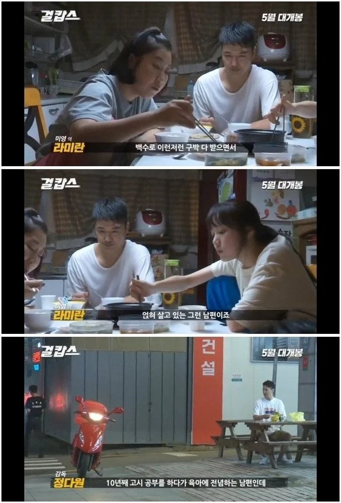

심지어 남편한테 오나홀 쥐어주면 그것도 딸깍
집안일이 쉬운줄 아냐고 여자에 미쳐서 옹호해주던 개병신한1남들의 결과물이지
솔직히 누가 나가서 일하고 싶겠냐 ㅋㅋㅋ집안일이 어려우면 얼마나 어렵다고
여자가 지랄해도 남자가 욕먹는게 현실
팩트) 오냐오냐 다 받아주는 한남 잘못이 맞다
애볼래 밭일할래 하면 밭일한다고 ㅋㅋ
육아가 헬인거지 집안일은 요즘시대에 강에가서 빨래하는거 아니면 뭐
ㄹㅇ 어디 우물 가서 물을 퍼와
삭바느질을 하는 것도 아니야
손 시려 죽겠는데 찬물로 설거지를해
삯
육아도 애기때 지나고 어린이집 보낼 시기 되면 할만함
옛날처럼 개울가서 빨래질하는 것도 아니고 로봇청소기, 식기세척기, 세탁/건조기 다 있어서 할 일은 정해져있고 효율은 엄청 늘었는데 웃기는 소리지
회사같은 경우 업무효율이 늘면 늘어난 효율에 맞춰서 업무가 추가되는데ㅋㅋ
집에서 논다 ㅋㅋㅋㅋㅋㅋㅋ
니들이 남편한테 하는 명언
내가 집에서 노는줄알아? 하는건 뭔데 ㅋㅋ
ㄹㅇ 여자들이 하면 그렇게 올려치기 하면서 남자가 하면 바로 저집남편 논대 ㅇㅈㄹ ㅋㅋㅋ
설거지랑 청소는 금방하겠는데 분리수거 <<< 얘가 젤 힘들다..
평소에 분리수거 쓰레기통 따로해서버려두면 분리수거하는날 개쉽던데
우수수수x3
끝!
만약에 가사랑 육아가 전통적으로 남자 일이었으면 존나 평가절하됐을거임. 산후우울증 같은 용어자체가 아예 안생겼을걸.
나 손느린주제에 꼼꼼한데 주말에 와이프 자유시간 줘놓고 집안일 해보면, 와이프가 육아핑계대고 평일동안 미룬 집안일도 두시간컷임. 애 낮잠자는동안 다끝나버려서 하다하다 씽크대랑 화장실 존나 광내는거까지 해도 시간남았다. 일 만들어서, 찾아서 하려고 해도 그이상 할게없음. 집이 한 60평 넘어가면 모르겠다만.
육아 얘기 하는데, 육아 요새 남자들한테 분담 존나 시켜먹잖아. 남자 육휴하면 말할것도없고, 일하는 아빠들한테도 주말육아 다 시켜먹으면서 무슨. 손많이가는 신생아기나 그럴때도 애아빠들 존나 부려먹히는건 똑같고. 아이가 통잠만 자도 집안일 개꿀임.
밥솥, 세탁기 없던 조선시대 시절은 ㄹㅇ 중노동 맞음. 근데 누가 요즘 세탁기 안씀?ㅋㅋ
나 심지어 로봇청소기는 결과물 맘에안들어서 내가 직접 청소 하는데도 다합쳐 두시간컷임
집안일은 걍 귀찮은거지 힘든거 없고
귀찮은거도 사실 밀리고 모이면 귀찮은거지 평소에 3분 5분씩 투자하면 귀찮을거도 없음 ㅋㅋㅋㅋㅋ
애보면서 집안일 한달 해보고 줫같아서 직장다시 구했음 애가 좀 크면모를까 갓난쟁이면 육아 집안일 헬이더라
아 선생님 이건 번외입니다...살림과...육아는 달라요
311
우리집사람은 집에서 애키우고 살림하는거 개꿀이라고 인정하고 나한테 암말 안했었음.
더 역겨운게 뭔 줄 암? 전업맘들이 워킹맘들 후려치기가 존나 심함 ㅋㅋ
보통 워킹맘들 보면 벌이가 시터쓰는거보다 많은 커리어우먼들이 많은데 거따대고 어디 좆소에서 알바따리한테도 금방 대체될거같은 일 했던 애들이 '남편이 능력이 없어서 그렇다', '애 정서발달이나 교육에 안좋다' 뭐 이런 헛소리들을 좆나게들 쳐함ㅋㅋ
아직 다들 뭘 모르네ㅋㅋ
집안일 쉬운거라고 꿀빠는거 뽀록난거라 하면 남자가 집안일에 대해 뭘 알기는 알아서 제대로 하겠냐 대충하지 여자가 해야 꼼꼼하고 제대로 한다 라고함
인간은 항상 자기합리화를 하면서 빠져나갈 구멍을 ㅋㅋㅋ
근데 팩트는 집안일도 남자가 더 잘함ㅋㅋㅋㅋ 특히 요즘 여자애들은 집안일 안하고 커서 더심할걸. 남자는 하다못해 청소나 정리라도 훨씬 압도적임
육휴하고 전업주부 해봤다. 오전이면 할거 다 끝남ㅋㅋㅋ 얼집 하원하는 4시까지 그냥 개꿀딱스
갓난아기때나 바쁘지 유치원부터는 그래도 조금 시간나고 초등학교부터면 시간 많아지지
난 정리도 못하고 집에오면 쉬고싶고 귀찮아서 집안일 못하겠더라. 누군가에게는 개꿀이겠지만 나한테는 너무 귀찮고 힘든 일임. 차라리 일을 하겠음. 그래서 와이프 전업한다고 했을때 안말림. 내가 못하는 일인데 해주면 고맙지.
집안일 << ㄹㅇ 해보면 별거 아닌거 다들 아는데 여자들의 가스라이팅 ㄹㅇ ㅈㄴ심함 ㅋㅋ
이거하나로 모든 비교가 끝나는게 육아 + 집안일: 아무리 힘들어도 내가 쉬고 싶으면 쉴수 있음, 회사다니는거: 과로사가 존재함
무능한 백수 아줌마가 하필 멍청함
멍청하고 무능하니 백수아줌마 하는거
집안 일은 힘든게 아니야 귀찮지
애보는건 해본적 없어서 모르것다 근데 그것도 남편 퇴근하면 자긴 육퇴하고 남편이 봐야한대매
집안일 솔직히 아무것도 아님 근데 애보는건 진짜 헬이다 애보는거 할바엔 노가다감
회사다니면서도 아침저녁 5찬1국 식사+ 세탁빨래청소 등등 육아까지 쌉가능.. 회전상 반찬넘치고 집안일 없을때 헬스가도 식스팩가능
이거 보니까 몇년 전에 썸타던 미친 년 생각 나네
항상 나한테 자기 돈 잘 번다 (자영업 하는 애임)
이런 식으로 어필 하는데 나는 어차피 재택이라
야 나한테 시집와라 니가 바깥 일 하고
내가 내조 좃나 잘해줄게 했더니
갑자기 태세전환 ㅅㅂ
그분들 뒤지게 유난떠는건 알아줘야함 ㅋㅋㅋㅋㅋ
애 없으면 집안일은 껌인데 애 키울땐 집안일도 존나 힘들어지더라. 설거지하러가면 엄마 어디갔냐고 난리가 난다ㅋㅋㅋ조용하면 사고치고 있는거임. 씻는 것도 빨리하려고 생전해본 적 없는 숏컷을 해봤네 머리감고 샤워하는데 7분컷 주말에 남편한테 아기 던져놓고 화장실 청소하는데 힐링이 따로 없다
솔까 집안일 윗세대는 힘든게맞음
식세대 건조기 로청 이런거없고
애도 최소 둘셋에 할머니때로가면 일곱여덞은 낳았으니
ㅈㄴ빡쎄지
근데 지금은 아님... 국평아파트기준해서 집안일 다 해도 30분 안걸릴듯
좀더 꼼꼼하게하면 1시간쯤
애 있어도 난이도 캐바캐인게 내 여사친들은 다 편하다하는데
좀 징징거리는 사람들은 엄청 말도안되게힘들다하는데 일은 안하고 육아만 하고싶다함....
걸캅스 ㅋㅋ저거 전여친이랑 보러갓다가 그날싸우고 헤어졌는데
예전엔 지랄병쌈뼝 다떨고 여왕대접 받았는데 그들이 그렇게 바라던 남녀평등 세상 도래해서 요즘 반반육아는 기본이요 육휴쓰고 전업주부 지내본 남자들 수두룩 빽빽이라 선전선동이 안먹힘 ㅋㅋ 20대때 철모르고 걸스캔두애니띵 외쳐대던게 지들 밥통 뺏어가는걸 왜 몰랐을까 ㅋㅋ
나도 전업주부로 지내봤는데 유일한 힘든점은 일이 너무 쉽고 단조롭고 편해서 "계속 이렇게 살아도 미래라는게 있을까" 하고 현타오는 순간 뿐이었음 ㅋㅋ
옛날 내조는 다르긴 달랐지
육아관련해선 괜히 치맛바람이라는 얘기가 나오는게아니였고 주식,부동산 같은것도 요새같이 딸깍으로
정보얻고 딸깍으로 살때도 아니라서 말그대로
안주인이였음
진짜 남자는 돈벌이에만 신경쓰고 가끔 일요일에
애 데리고 나가 놀아주면 끝이였지
맞벌이가 늘어나면서 집안일 공동분담이 되는건 맞는데
요새는 맞벌이도아닌데 집안일도 공동분담하려고하니
개지랄 나는거지 뭐
코로나때 남편들 재택 하니까 개지랄난것만 봐도 ㅋㅋ 꿀빠는거 들킬까봐 여기저기서 곡소리 ㅈㄴ게 나왔지
집안일 30분도 안걸려; 빨래 건조+2분
식세기 +5분 바닥청소+30초 빨래개기+7분
화장실청소+10분 또뭐있냐
섹스
그건...가족끼리 그러는거아니다
무슨 조선시대도 아니고
로청 딸깍, 세탁기 딸깍, 건조기 딸깍, 식세기 딸깍